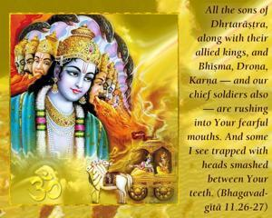
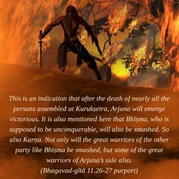

All the sons of Dhṛtarāṣṭra, along with their allied kings, and Bhīṣma, Droṇa, Karṇa – and our chief soldiers also – are rushing into Your fearful mouths. And some I see trapped with heads smashed between Your teeth.


In a previous verse the Lord promised to show Arjuna things he would be very interested in seeing. Now Arjuna sees that the leaders of the opposite party (Bhīṣma, Droṇa, Karṇa and all the sons of Dhṛtarāṣṭra) and their soldiers and Arjuna’s own soldiers are all being annihilated. This is an indication that after the death of nearly all the persons assembled at Kurukṣetra, Arjuna will emerge victorious. It is also mentioned here that Bhīṣma, who is supposed to be unconquerable, will also be smashed. So also Karṇa. Not only will the great warriors of the other party like Bhīṣma be smashed, but some of the great warriors of Arjuna’s side also.